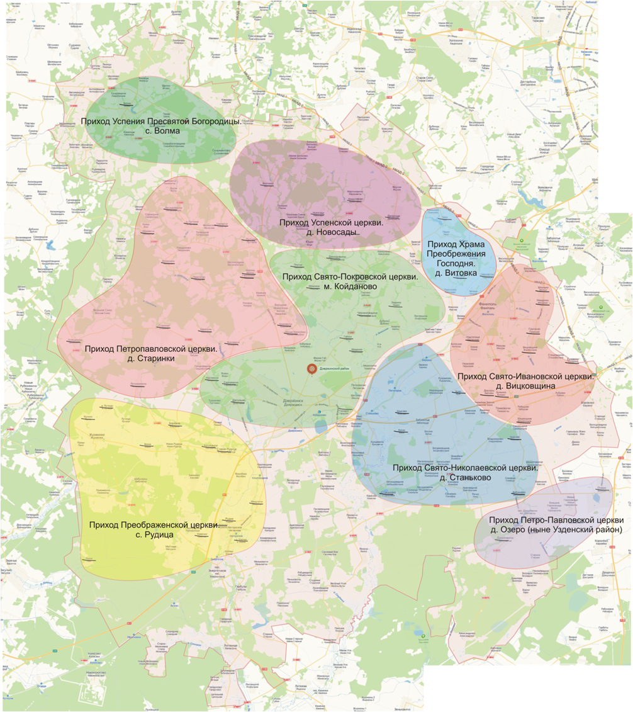
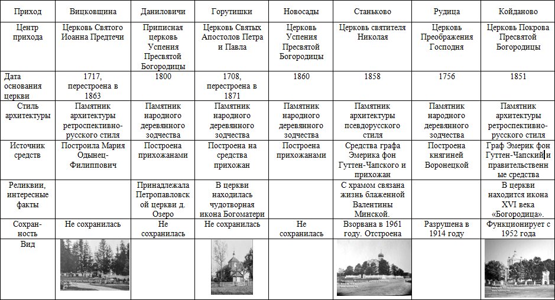
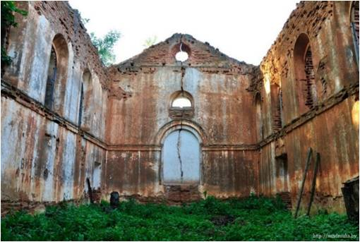
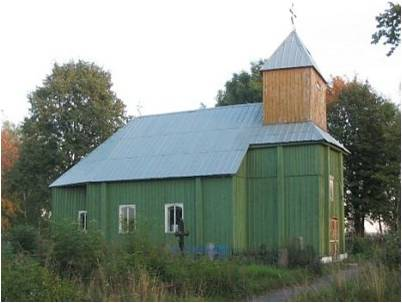
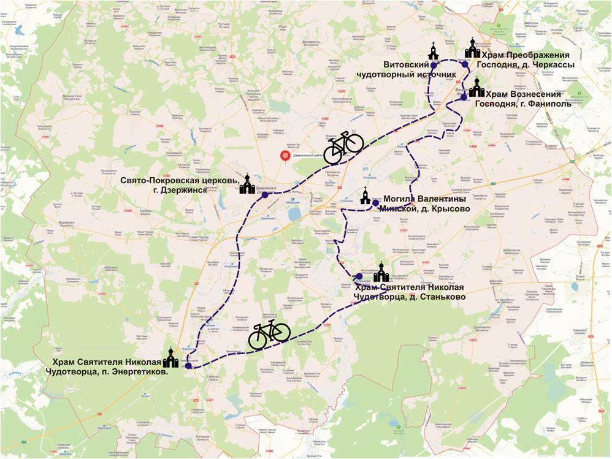

Приложения
Приложение 1. Приходы Минского уезда – 3 и 2 благочиния на современной карте Дзержинского района.

Приложение 2. Полный список обитаемых мест Минской губернии Минского уезда. Приход Покровской церкви м. Койданова. [5, с. 213].

Церковь Покрова Пресвятой Богородицы
Приложение 3. Приходы Минского уезда – 3 благочиние Койдановской волости.
Приложение 4. Нефункционирующие храмы.
Петропавловская церковь д. Старинки
Покровская церковь д. Добринёво


Приложение 5. Карта велопохода по православным храмам и святыням Дзержинского района.
